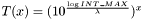
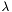
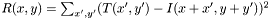
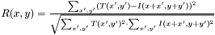
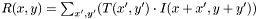
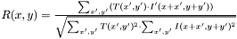
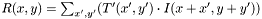
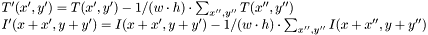
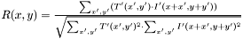

This page describes the methods libcv uses to search for a sub image in a root image.
Tolerance values are used to control how strict each of the following search methods are. Acceptable values are from INT_MIN to INT_MAX.
Additionally, each of the reference programs - cva-input and cva-match - have a "sane tolerance" built in. This is accessed by the "-o" switch, and allows you to specify a tolerance on scale of 1-100, where 1 is incredibly strict, and 100 is incredibly loose.
- Note:
- The formula for calculating the sane tolerance is:  where  is the highest tolerance value (in our case, 100). Finally, we have to round down a little bit to ensure that we don't accidentally generate a value higher than
INT_MAX. The formula used does mean that we will never be able to generate values lower than 0.
- Warning:
- The "sane-tolerance" option doesn't know which search method you are using - Thus while 1 is an incredibly strict search for Squared Difference and Squared Difference (Normalized), it is fairly loose search for Cross Correlation, Cross Correlation (Normalized), Correlation Coefficient, and Correlation Coefficient (Normalized)
Squared Difference is the default search method used by libcvautomation, as well as cva-match and cva-input. - For this method, setting a low tolerance value results in a more strict match.
Formula: 
#define CV_TM_SQDIFF_NORMED 1
- For this method, setting a low tolerance value results in a more strict match.
Formula: 
This is the Cross Correlation search method. - For this method, setting a high tolerance value results in a more strict match.
Formula: 
#define CV_TM_CCORR_NORMED 3
- For this method, setting a high tolerance value results in a more strict match.
Formula: 
This is the Correlation Coefficient search method. - For this method, setting a high tolerance value results in a more strict match.
Formula:  where: 
#define CV_TM_CCOEFF_NORMED 5
- For this method, setting a high tolerance value results in a more strict match.
Formula: 
Generated on Tue Jul 17 12:19:00 2012 for libcvautomation by
 1.4.7
1.4.7